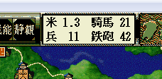

相場の情報を取得・設定するAPIです。
イメージとしては下記を想定すれば良いでしょう。
米の部分については、表示上は浮動小数になっていますが、
内部管理では、下記の米相場は「15」という値となります。

相場変更直前に実行されるイベントハンドラの
On_相場変更直前 を利用してください。
void カスタム::On_プレイヤ担当ターン《メイン画面》() {
int 米相場 = p相場情報.米相場; // 画面上ではこの1/10の値が表示されている
int 馬相場 = p相場情報.馬相場;
int 鉄砲相場 = p相場情報.鉄砲相場;
int 兵相場 = p相場情報.兵相場;
if (米相場 <= 10) { // 画面表示上では、1.0
デバッグ出力 << "米が安く買えますよ" << endl;
}
else if (米相場 >= 15) { // 画面表示上では、1.5
デバッグ出力 << "米が高く売れますよ" << endl;
}
}
Set_**相場() 関数は、
相場変更直前に実行されるイベントハンドラ「On_相場変更直前」内でのみ、正しく機能します。
他のイベントハンドラ内での実行は想定されていません。
相場に関する主な所は以上となります。 詳しくは「相場情報型.h」などを参照してください。